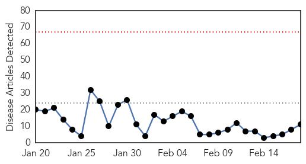
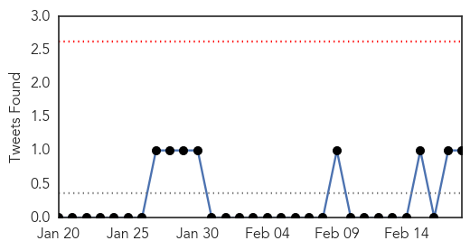
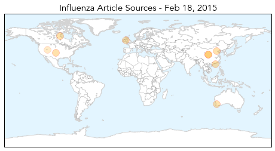
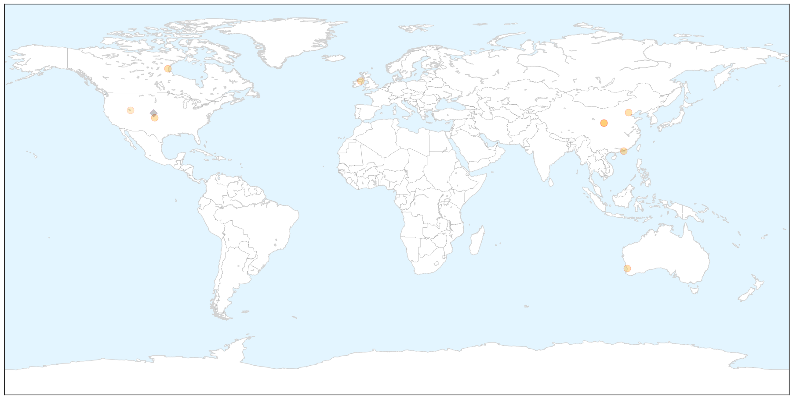
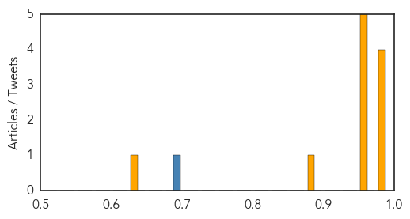
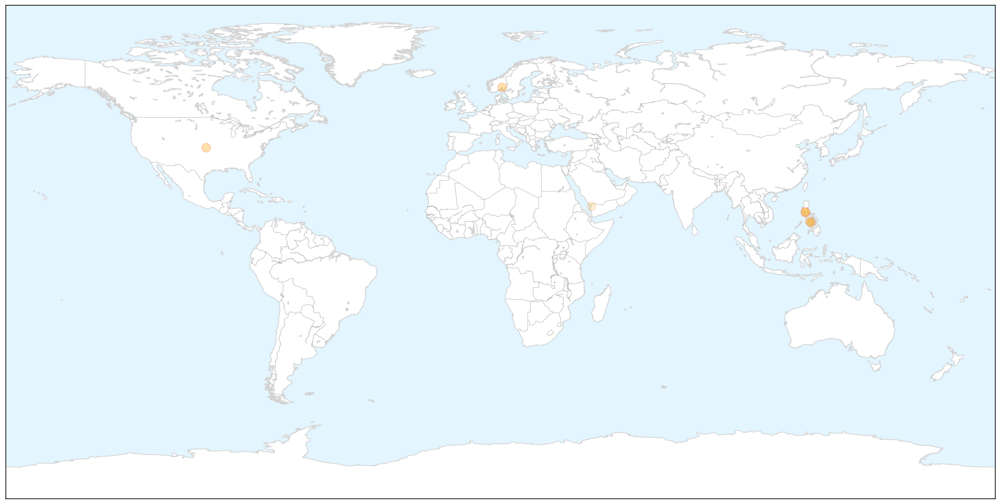

Influenza
30-Day Web Trend
0 alerts, 0 warnings

30-Day Twitter Trend
0 alerts, 0 warnings

Article Locations

X

Article Confidences
Top Articles:
- 0.997
- Flu season not as severe as other years
- 0.985
- Historical accounts detail wave of flu deaths in Oklahoma during 1918 pandemic
- 0.982
- 'No concern' over scabies spreading to more schools
- 0.982
- Hong Kong influenza death toll at 228 after 18 die in one day
- 0.961
- 'Bird flu protection' given by seasonal flu vaccine
- 0.959
- Flu Shot Protects against New Strain H7N9 — Naharnet
- 0.955
- Flu shot protects against new H7N9 strain: study
- 0.955
- Flu shot protects against new H7N9 strain: study
- 0.954
- More health-care workers getting flu shots
- 0.875
- Latest Newry News, Newry Sport and Newry Business for Newry City
- 0.650
- More diseases in Davis County
Top Tweets:
- 0.680
- RT: @influenza_bio We can help! @WNEW: Military medical unit from Md. packing up 4 mobile Ebola testing labs in Liberia h…
MERS
30-Day Web Trend
14 alerts, 0 warnings

30-Day Twitter Trend
4 alerts, 0 warnings

Article Locations

X

Article Confidences

Top Articles:
- 1.000
- Public Health Notice: Middle East Respiratory Syndrome Coronavirus (MERS-CoV)
- 0.994
- News Scan for Feb 17, 2015
- 0.971
- Report guests with MERS-CoV symptoms, resort owners asked
- 0.967
- Philippines wants compulsory testing for Mers
- 0.952
- Negros Oriental
- 0.909
- (MERSCOV monitoring:) Swab results on 4 plane passengers out on Feb. 19
- 0.567
- Sudden upsurge of coronavirus: A serious threat to umrah pilgrims, warn health experts
Top Tweets:
-
No tweets found for Feb 18, 2015